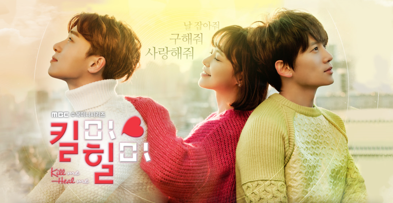
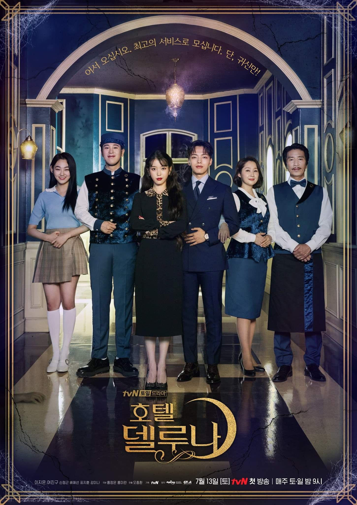

누군가는 태어나고 누군가는 삶을 끝내는, 인생의 축소판이라 불리는 병원에서 평범한 듯 특별한 하루하루를 살아가는 사람들과 눈빛만 봐도 알 수 있는 20년지기 친구들의 케미스토리를 담은 드라마이다.

다중인격장애를 소재로, 일곱 개의 인격을 가진 재벌 3세와 그의 비밀 주치의가 된 레지던트 1년차 여의사의 버라이어티한 로맨스를 그린 힐링 로맨틱 코미디 드라마이다.

세계를 압축해 놓은 듯한 이태원이라는 작은 거리에서 각자의 가치관으로 자유를 쫓는 이들의 창업 신화를 그린 청춘 드라마이다.

엘리트 호텔리어가 운명적인 사건으로 호텔 델루나의 지배인을 맡게 되면서 달처럼 고고하고 아름답지만 괴팍한 사장과 함께 델루나를 운영하며 생기는 특별한 이야기를 그린 판타지, 호러+로맨스 드라마이다.

자신이 사는 곳이 만화 속 세상이며 자신이 조연임을 자각한 고등학생 은단오가 만화 속 엑스트라인 하루와 함께 작가가 정해준 설정값을 거부하고 스스로의 운명을 개척하는 모험을 그린 드라마이다.